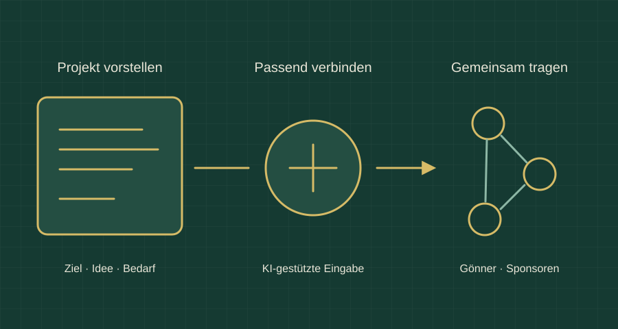

BSVRB / Tragmi
Tragmi
Wenn Projekte Unterstützung finden.
Tragmi ist eine Plattformidee für Gönnerschaft und Sponsoring. Menschen stellen ihr Projekt vor; passende Unterstützende sollen es finden und mittragen können.

Ein Projekt verständlich machen
Projektgebende beschreiben ihre Idee, ihr Ziel und den benötigten Beitrag. Eine KI-gestützte Eingabe soll helfen, die Angaben verständlich und vollständig zu formulieren.
Passende Unterstützung finden
Die Plattform soll selbst nach geeigneten Gönnern und Sponsoren suchen. Beiträge und vereinbarte Gegenleistungen – etwa eine Erwähnung oder Beteiligung – gehören zur Projektpräsentation.
In der Schweiz beginnen
Der vorgesehene Start liegt in der Schweiz. Das Konzept ist so gedacht, dass es später auch über die Landesgrenzen hinaus eingesetzt werden kann.
Die Plattform mittragen
Ein angemessener Anteil für Aufwand und Betrieb ist Teil des Modells. Aarulon und Mechafisch sind als erste Referenzprojekte vorgesehen. Die Seite stellt das Konzept vor; ein öffentlicher Finanzierungsbetrieb ist damit nicht verbunden.